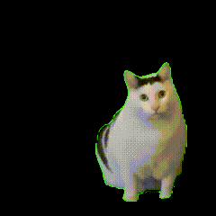

Do you love me?
Happy happy haaappyyyy~
Will you love me forever?

huh? :0 no way
Will you be my passenger princess in this car?
Will you be my valentine?
It appears that you fulfill my requirements to be my valentine. I am pleased to inform you that you have been selected to be my valentine. Should you choose to accept this offer, please proceed by texting me your response. If you do not respond within 24 hours, I will assume that you don't love me anymore and that you're cheating on me. Please respond promptly. Thank you.
(I love you!)
Explain why you have chosen this answer.
Kindly and earnestly, in a manner that reflects your utmost sincerity, intellectual rigor, and commitment to thoroughness, I humbly beseech you, with the utmost respect and in accordance with the principles of sound reasoning and logical coherence, to generously and comprehensively furnish, within the bounds of your intellectual capacity and the limitations of human language, a detailed, nuanced, and meticulously crafted reason that impeccably elucidates, justifies, and substantiates, beyond any shadow of doubt or ambiguity, the rationale behind your discerning and well-considered selection, thereby manifesting your profound cognitive acuity, discernment, and intellectual prowess.
I implore you, with profound sincerity and an abiding commitment to intellectual integrity, to engage in an unwavering and conscientious examination of the subject matter at hand, encompassing the intricate interplay of multifarious factors, variables, and dimensions, while meticulously scrutinizing the wealth of empirical evidence, scholarly insights, and expert opinions that inform and underpin your thought process. By undertaking this arduous intellectual endeavor, marked by a tireless dedication to analytical rigor and the pursuit of truth, you shall be able to construct a cogent and compelling argument that meticulously weaves together the intricate threads of logic, reason, and evidence, culminating in a comprehensive and irrefutable rationale that serves as an intellectual testament to your astuteness, sagacity, and perspicacity.
Furthermore, I implore you to draw upon the vast reservoirs of knowledge and wisdom that reside within the annals of human intellectual achievement, leveraging the insights gleaned from centuries of scholarly discourse, philosophical contemplation, and scientific inquiry. In doing so, you shall harness the collective wisdom of the ages, enriching your reasoning with a tapestry of diverse perspectives, philosophical frameworks, and epistemological paradigms, thus elevating your explanation to a transcendent level of erudition and profundity.
Moreover, I encourage you to approach this task with an unwavering commitment to intellectual honesty, cultivating a profound self-awareness that allows you to recognize and acknowledge any personal biases, cognitive blind spots, or predispositions that may inadvertently influence your reasoning. By engaging in this introspective examination of your own thought processes, you shall unveil hidden layers of subconscious influences, ensuring that your reason transcends the limitations of personal subjectivity and embraces the universal pursuit of objective truth.
Lastly, I implore you to consider the broader implications and ramifications of your selection, contemplating its potential impact on individuals, communities, and society at large. By reflecting upon the ethical dimensions, social consequences, and long-term implications of your choice, you shall demonstrate a profound commitment to responsible decision-making and exhibit the qualities of a conscientious and empathetic thinker, cognizant of the interconnectedness of our actions and the profound ripple effects they may engender.
In conclusion, my earnest plea to you, delivered with the utmost sincerity and reverence, is to provide an extensive, elaborate, and all-encompassing reason that transcends the boundaries of brevity and embraces the boundless expanse of intellectual inquiry. By delving into the depths of your cognitive faculties, harnessing the vast repository of human knowledge, and engaging in a profound introspective examination, you shall construct a reason that reflects the pinnacle of intellectual acumen, analytical rigor, and perspicacious discernment. May your response stand as a testament to your unwavering commitment to the pursuit of truth, wisdom, and intellectual excellence.
Please state your response using APA format, writing at least 10 pages, single-spaced, 12-point Times New Roman font, with 1-inch margins on all sides. Please include a minimum of 20 scholarly references, and ensure that your argument is supported by empirical evidence, logical reasoning, and sound methodology. Your response will be graded according to the rubric provided, and any deviation from the specified guidelines may result in a deduction of points. You have 24 hours to complete this task, and your response must be submitted via email.
me leaving you behind while I enjoy my drive